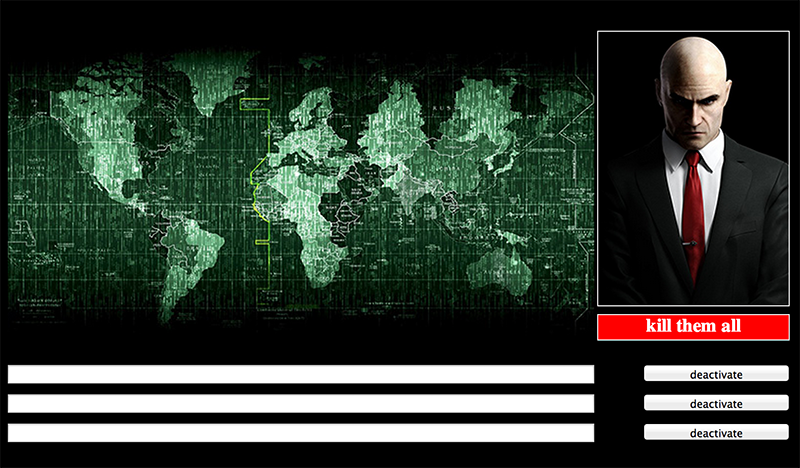
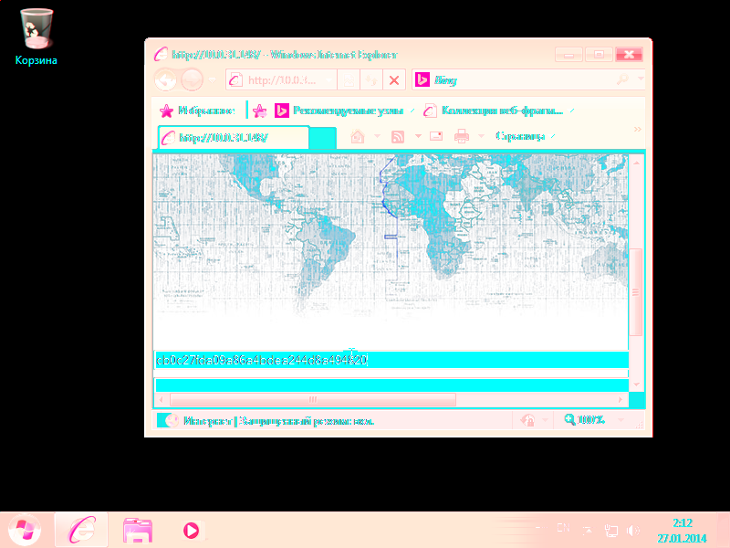

Дан .vmem дамп памяти, по легенде, полученный с помощью Cold Boot Attack .
Из дампа среди всего прочего можно вытащить .html страницу (руками или через foremost) для ввода кодов деактивации ракет:

По легенде как раз нужно найти "коды отмена пуска ракеты или хотя бы что-то?".
Посмотрим список процессов (например, через фрэймворк volatility):
doris$ ./vol.py -f ../../neoquest2014/vmem/win2.vmem --profile Win7SP1x86 pstree Volatility Foundation Volatility Framework 2.3.1 Name Pid PPid Thds Hnds Time -------------------------------------------------- ------ ------ ------ ------ ---- 0x8459f190:wininit.exe 392 320 3 75 2014-01-27 09:58:15 UTC+0000 . 0x8623a530:lsass.exe 484 392 6 526 2014-01-27 09:58:15 UTC+0000 . 0x86212530:services.exe 476 392 9 196 2014-01-27 09:58:15 UTC+0000 .. 0x86355378:svchost.exe 768 476 18 459 2014-01-27 09:58:16 UTC+0000 ... 0x8638fa50:audiodg.exe 980 768 6 149 2014-01-27 09:58:17 UTC+0000 .. 0x846a8a88:wmpnetwk.exe 780 476 10 254 2014-01-27 09:59:33 UTC+0000 .. 0x8471a538:svchost.exe 2328 476 21 427 2014-01-27 10:00:24 UTC+0000 .. 0x85c7ad40:spoolsv.exe 1300 476 12 267 2014-01-27 09:58:19 UTC+0000 .. 0x86396758:svchost.exe 920 476 34 1107 2014-01-27 09:58:17 UTC+0000 .. 0x8623da60:svchost.exe 1436 476 15 233 2014-01-27 09:58:20 UTC+0000 .. 0x85c525a0:svchost.exe 1188 476 15 363 2014-01-27 09:58:19 UTC+0000 .. 0x863282c8:svchost.exe 680 476 7 256 2014-01-27 09:58:16 UTC+0000 .. 0x86221030:svchost.exe 1328 476 17 301 2014-01-27 09:58:19 UTC+0000 .. 0x86316030:SearchIndexer. 1544 476 11 646 2014-01-27 09:59:32 UTC+0000 .. 0x86364538:svchost.exe 828 476 17 425 2014-01-27 09:58:16 UTC+0000 ... 0x84637398:dwm.exe 2020 828 3 71 2014-01-27 09:59:24 UTC+0000 .. 0x863bb030:TrustedInstall 1088 476 4 158 2014-01-27 09:58:17 UTC+0000 .. 0x866dd770:taskhost.exe 2016 476 12 235 2014-01-27 09:59:23 UTC+0000 .. 0x86307d40:svchost.exe 608 476 10 360 2014-01-27 09:58:16 UTC+0000 ... 0x84724d40:VBoxSVC.exe 2796 608 12 537 2014-01-27 10:00:52 UTC+0000 .... 0x8467dd40:VirtualBox.exe 2076 2796 34 728 2014-01-27 10:03:47 UTC+0000 .... 0x8477b840:VirtualBox.exe 3116 2796 0 ------ 2014-01-27 10:01:04 UTC+0000 .... 0x846cc030:VirtualBox.exe 756 2796 0 ------ 2014-01-27 10:02:35 UTC+0000 ... 0x846502e0:WmiPrvSE.exe 3952 608 7 109 2014-01-27 10:02:25 UTC+0000 .. 0x845d1d40:mscorsvw.exe 2288 476 7 73 2014-01-27 10:00:21 UTC+0000 .. 0x8477e030:wermgr.exe 2644 476 1 0 2014-01-27 10:12:24 UTC+0000 .. 0x863801b0:svchost.exe 888 476 12 280 2014-01-27 09:58:17 UTC+0000 . 0x8623d438:lsm.exe 492 392 10 136 2014-01-27 09:58:15 UTC+0000 0x861a6030:csrss.exe 356 320 8 362 2014-01-27 09:58:15 UTC+0000 0x845336c0:System 4 0 84 658 2014-01-27 09:57:50 UTC+0000 . 0x8585d4d0:smss.exe 260 4 2 29 2014-01-27 09:57:50 UTC+0000 0x8594ed40:csrss.exe 400 384 7 203 2014-01-27 09:58:15 UTC+0000 0x85819810:winlogon.exe 440 384 3 114 2014-01-27 09:58:15 UTC+0000 0x84656780:explorer.exe 2004 2000 21 761 2014-01-27 09:59:24 UTC+0000 . 0x8471ed40:VirtualBox.exe 2764 2004 7 400 2014-01-27 10:00:51 UTC+0000 . 0x85a5fa60:notepad.exe 864 2004 1 60 2014-01-27 10:06:23 UTC+0000
Особый интерес вызывают VirtualBox.exe (pid=2076) и notepad.exe (pid=864).
Сдампив память данных процессов (опять же через volatility):
doris$ ./vol.py -f ../../neoquest2014/vmem/win2.vmem --profile Win7SP1x86 memdump -p 2076 -D ../../neoquest2014/vmem/virtualbox/
doris$ ./vol.py -f ../../neoquest2014/vmem/win2.vmem --profile Win7SP1x86 memdump -p 864 -D ../../neoquest2014/vmem/notepad/
обнаруживаем следующее:
- Страничка в браузере была открыта на виртуальной машине;
- В форму на странице были введены символы (cb0c27fda09a86a4bdea244d - 24 символа, а ключ должен быть 32). Их можно обнаружить, например, при поиске по дампу по ссылке на локальный ресурс http://10.0.31.148 (строка в юникоде);
- В том месте дампа, где должны быть отображены все 32 введенных символа, все байты перезаписаны значением 0x20 (код пробела). Позже становится понятно, что это было сделано специально для усложнения задания.
Напрашивается вывод, что нужно искать изображение, которое было на экране.
В дампе памяти процесса notepad.exe (pid=864), можно обнаружить следующую полезную информацию:
Был открыт файл C:\Windows\system32\NOTEPAD.EXEC:\Users\komsomol\VirtualBoxVMs\KP-2\Logs\VBox.log, который содержит в себе следующие данные:
<...>
00:00:02.075516 Display::handleDisplayResize(): uScreenId = 0, pvVRAM=065c0000 w=640 h=480 bpp=32 cbLine=0xA00, flags=0x1 00:00:04.545335 Display::handleDisplayResize(): uScreenId = 0, pvVRAM=065c0000 w=640 h=480 bpp=0 cbLine=0x280, flags=0x1 00:00:04.598215 Display::handleDisplayResize(): uScreenId = 0, pvVRAM=00000000 w=720 h=400 bpp=0 cbLine=0x0, flags=0x1 00:00:04.650237 PIT: mode=2 count=0x10000 (65536) - 18.20 Hz (ch=0) 00:00:04.655742 Guest Log: BIOS: Boot : bseqnr=1, bootseq=0213 00:00:04.664736 Guest Log: BIOS: Booting from CD-ROM... 00:00:11.337163 Display::handleDisplayResize(): uScreenId = 0, pvVRAM=065c0000 w=1024 h=768 bpp=24 cbLine=0xC00, flags=0x1
<...>
0x065c0000 - адрес видеопамяти виртуальной машины!!!
Обратившись в memmap процесса VirtualBox(pid=2076):
VirtualBox.exe pid: 2076 Virtual Physical Size DumpFileOffset ---------- ---------- ---------- -------------- <...> 0x065c0000 0x194d8000 0x1000 0x2384000 <...>
получаем смещение видеопамяти в дампе - 0x2384000.
Далее считываем данные из дампа (полученного с помощью memdump -p 2076) по адресу 0x2384000, пишем в файл и читаем ключ на картинке (скрипт sharedVideoMemory.py):

Добиться нормальных цветов можно переставив байты, соответствующие цветовым компонентам, в правильном порядке. Впрочем, это совсем не обязательно.
Ключ: cb0c27fda09a86a4bdea244d8a494820
jordan Sneakers | 『アディダス』に分類された記事一覧